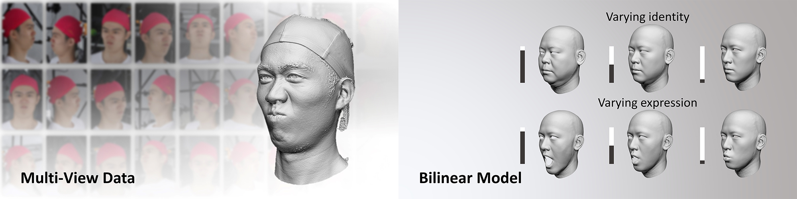

We present a large-scale detailed 3D face dataset, FaceScape, and propose a novel algorithm that is able to predict elaborate riggable 3D face models from a single image input. FaceScape dataset provides 3D face models, parametric models and multi-view images in large-scale and high-quality. The camera parameters, the age and gender of the subjects are also included. The data have been released to public for non-commercial research purpose.
The data available for downloading contains 847 subjects x 20 expressions, in a total of 16,940 models, which is roughly 90% of the complete data. The other 10% of data are not released for potential evaluation or benchmark in the future. The available data includes:
There are 847 tuple of topologically uniformed models. Each tuple of data consists of:
/models_reg/$IDENTITY$_$EXPRESSION$.obj) /dpmap/$IDENTITY$_$EXPRESSION$.png) /models_reg/$IDENTITY$_$EXPRESSION$.obj.mtl) /models_reg/$IDENTITY$_$EXPRESSION$.jpg) where $IDENTITY$ is
the index of identity (1 - 847), $EXPRESSION$ is the index of expression (0 - 20).
Please note that some of the model's texture maps (index: 360 - 847) were mosaics
around the eyes to protect the privacy of some participants. FaceScape provides multi-view images, camera paramters and reconstructed 3D shapes. There are 359 subjects x 20 expressions = 7120 tuples of data. The number of available images reaches to over 400k.
Please view here for detailed description and usage of the multi-view data.
Our bilinear model is a statistical model which transforms the base shape of the faces into a vector space representation. We provide two 3DMM with different numbers of identity parameters:
core_847_50_52.npy - bilinear model with 52 expression parameters and 50 identity parameters. core_847_300_52.npy - bilinear model with 52 expression parameters and 300 identity parameters.factors_id_847_50_52.npy and factors_id_847_300_52.npy are identity parameters corresponding to 847 subjects in the dataset. Please see here for the usage and the demo code.
We provide Python code to extract facial landmarks and facial region from the TU-models. Please keep a watch on our project page where the latest resources will be updated in the future.
One sample is rendered online as shown below. The online-rendered model is the down-sampled version of provided model, because high-resolution displacement map is too slow to be rendered online. The rendering result with the high-resolution displacement map is shown in the figure below the online-renderer.
factors_id_847_50_52.npy and factors_id_847_300_52.npy are identity parameters corresponding to 847 subjects in the dataset.
The geometric models of different identities and different expressions share the same mesh topology, which makes the features on faces easy to be aligned. This also helps in building a 3D morphable model.
We use base shapes to represent rough geometry and displacement maps to represent detailed geometry, which is a two-layer representation for our extremely detailed face shape. Some light-weight software like MeshLab can only visualize the base mesh model/texture. Displacement maps can be loaded and visualized in MAYA, ZBrush, 3D MAX, etc.
The subjects are asked to perform 20 specific expressions for capturing: neutral, smile, mouth-stretch, anger, jaw-left, jaw-right, jaw-forward, mouth-left, mouth-right, dimpler, chin-raiser, lip-puckerer, lip-funneler, sadness, lip-roll, grin, cheek-blowing, eye-closed, brow-raiser, brow-lower.
The texture maps and displacement maps reach 4K resolution, which preserving maximum detailed texture and geometry.
For downloading the dataset, please complete the License Agreement and send it to nju3dv@nju.edu.cn, and download from download link (Google Drive) or download link (Baidu Netdisk).
When you submit request, which means you have read, understand, and commit to the entirety of the License Agreement. There are, still, a few KEY POINTS which need to emphasise again:If you have some questions, please refer to the issue section of our GitHub repository, or send email to nju3dv@nju.edu.cn and cc zh@nju.edu.cn. We recommend to firstly browse the FAQ and the solved issues in GitHub repository, where the answer you want may has been given.
@article{zhu2023facescape,
title={Facescape: 3d facial dataset and benchmark for single-view 3d face reconstruction},
author={Zhu, Hao and Yang, Haotian and Guo, Longwei and Zhang, Yidi and Wang, Yanru and Huang, Mingkai and Wu, Menghua and Shen, Qiu and Yang, Ruigang and Cao, Xun},
journal={IEEE transactions on pattern analysis and machine intelligence},
volume={45},
number={12},
pages={14528--14545},
year={2023},
publisher={IEEE}
}
@inproceedings{yang2020facescape,
author={Yang, Haotian and Zhu, Hao, Wang, Yanru and Huang, Mingkai and Shen, Qiu and Yang, Ruigang and Cao, Xun},
title={FaceScape: A Large-Scale High Quality 3D Face Dataset and Detailed Riggable 3D Face Prediction},
booktitle={IEEE/CVF Conference on Computer Vision and Pattern Recognition (CVPR)},
month={June},
year={2020},
page={601--610}
}